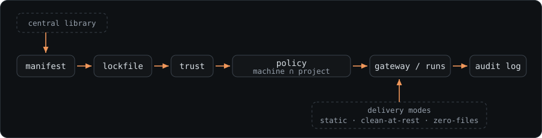

Concepts and glossary
For every reader. This page defines each term AgentStack uses, in two or three plain sentences. Every other page links here on first use instead of re-explaining — so keep it open the first time through.
Start with the files#
Before any of the terms below, this is what AgentStack actually puts in a project. Two groups: the ones you write and commit, and the ones written for you.
your-project/
├── .agentstack/
│ ├── agentstack.toml # what your tools may run — you edit this ← manifest
│ ├── agentstack.lock # the exact bytes that resolved to ← lockfile
│ ├── skills/ # skill files this project carries (when used)
│ ├── instructions/ # instruction fragments (when used)
│ └── .env # local secret values — gitignored, never committed
│
├── .mcp.json # ─┐
├── .claude/skills/ # │ rendered for each CLI: generated output, not
└── AGENTS.md # ─┘ hand-edited — regenerate or remove it any timeCommit the first group; it is the portable part. The second group is written by agentstack apply in one shape per CLI, and how much of it exists at rest is decided by delivery routing — skills and MCP servers reach an MCP-capable CLI live, so nothing generated lands here for them, while house rules, settings, hooks and extensions are real files. Machine-wide counterparts of the same idea live in ~/.agentstack/; everything above is what one repository carries.
The rest of this page names each piece, in the order the pieces are used.
How the pieces fit together#

Read it left to right: you write a manifest, the lockfile pins it, you trust the result, policy narrows what may run, and the gateway (or a run) carries it to your tools — every call landing in the audit log. The library sources feed shared capabilities into the manifest; delivery routing decides how each capability reaches the agent.
The manifest and the lockfile#
Manifest — one file (.agentstack/agentstack.toml) listing everything your tools may run: MCP servers, skills, instructions, settings, hooks, and extensions. You edit it; AgentStack renders it into each tool's own config. It holds only ${REF} secret placeholders, never real values.
Lockfile — agentstack.lock pins the manifest's resolved contents (server definitions, skill bytes, instruction bytes) to SHA-256 digests, so the same inputs reproduce and any change is visible. It is part of what you consent to when you trust a project.
Toolset#
Toolset — a named subset of the manifest ("backend", "design") you activate together. A manifest with no toolsets activates its whole inline set as the default, so you only name one when you have more than one. In the manifest file a toolset is a [profiles.<name>] table — the key kept its original spelling so existing manifests keep working.
(The policy presets in examples/policies/ are unrelated — starter machine-policy files you copy and edit, not toolsets.)
CLI, adapter, target#
CLI (≡ harness) — the agent tool you run: Claude Code, Codex, Cursor, and so on. Some flags and older output call it a harness; same thing, and this page uses CLI.
Adapter — AgentStack's per-CLI compiler that turns one manifest into that CLI's own config format. agentstack adapters list shows their ids; there are 13 today, at three different levels of verification — adapters.md says what each one is tested against and what it manages.
Target — an adapter id you name in [targets] (or a --target flag) to say which CLIs a command acts on. More: reference.md — data-driven adapters.
MCP, gateway, brokered call#
MCP (Model Context Protocol) — the plugin standard agent CLIs use to expose tools; an "MCP server" is one such plugin. Spelled out here because the rest of the docs assume it.
Gateway — AgentStack's in-process broker. Instead of each CLI talking to MCP servers directly, calls route through the gateway, where policy is checked and every call is logged. It is not the agentstack proxy command — an unrelated, observe-only relay that watches Anthropic-API token usage and enforces nothing.
Brokered call — any tool call the gateway routes and records. Only brokered calls are policy-checked and audited; a server rendered straight into a CLI's native config is called directly and is not brokered. More: reference.md — agent-operable mcp, reference.md — code mode, reference.md — the wire proxy, reference.md — call log.
Trust and the consent digest#
Trust — your local approval that a project may auto-load on this machine. Until you run agentstack trust ., a cloned repo is inert: no server spawns, no skill enters context, no secret resolves. Trust says the surface was approved for loading — not that the code is safe, or that a trusted project is safe to run unsandboxed.
Consent digest — the SHA-256 fingerprint of your manifest, local overlay, and lockfile that trust is pinned to. Change any of those bytes — a git pull, a re-lock — and the project drops back to untrusted until you re-trust it. More: ENFORCEMENT.md — what trusted does and does not mean.
The yes — the consent moment itself, and the one thing never automated. For files you drop into .agentstack/skills/ or .agentstack/instructions/, agentstack yes (v0.18.0+) is the whole ceremony in one step: notice, pin, review, render.
Review card — what a yes shows you before it means anything: what the content adds, what it would run, contact, or read, and — on a re-gate — what changed since you last approved it, as a real diff rather than a digest.
Provenance — the check that decides which review you get. Content you demonstrably wrote here (untracked in git, or newer than the last review) may take the one-step path; anything that arrived with a clone always takes the full staged review. Selection is by evidence, never by politeness.
Undo timeline — agentstack undo (v0.18.0+): every recorded write, newest first; pick a point and revert to it. The revert is itself recorded, so it can be undone too. restore is the same record as a script-friendly, one-write primitive, and works in every release. More: undo anything.
Drift#
Drift — a mismatch between the manifest and what is actually on disk, either way: a config hand-edited since the last render, or manifest entries that would be removed on the next one. doctor flags it and names the fix — adopt to keep a hand-edit, apply --write when the manifest is right. More: reference.md — drift: adopt or apply?.
Guard#
Guard — a cooperative check AgentStack wires into each CLI's own pre-tool-use hook to block obvious destructive commands (rm -rf outside the workspace, writes to .env and key files). It catches an agent's accidents, not a determined attacker: any CLI that ignores its own hooks, or a process it never routes through a hook, bypasses it entirely. It is never enforcement. More: ENFORCEMENT.md — filesystem write.
Sandbox, lockdown, and run --locked#
Three ways to raise how strongly a run is confined, lightest to strongest:
run --locked — no container. AgentStack runs the fail-closed pre-launch gates (trust, lock verification, policy admission) and freezes the run's tool surface, then launches the CLI on your host. Protection before launch, not kernel isolation.
run --sandbox — a Docker container with a host-side egress proxy. Proxied HTTPS is checked against policy, but the container keeps a direct network route a proxy-ignoring process could still use.
run --lockdown — the container's only route out is the egress proxy, so there is no direct route at all. Strongest confinement AgentStack ships. More: ENFORCEMENT.md — the matrix.
Posture and the machine-policy summary#
Posture — the per-run label for how strongly the effective policy is actually enforced, printed on the run banner. The four labels are HOST / ADVISORY, HOST / PROTECTED, SANDBOX / PROXIED · DIRECT ROUTE OPEN, and LOCKDOWN / ENFORCED · NO DIRECT ROUTE — the sandbox and lockdown labels are emitted with those suffixes, and the suffix is the honest half: plain --sandbox proxies egress but leaves a direct route a proxy-ignoring process can take. The labels are enumerated in reference.md — execution posture; what each one actually guarantees is ENFORCEMENT.md — the matrix, which is keyed by mode rather than by label. "Posture" always means this label.
Machine-policy summary — a separate one-word line doctor prints, describing your machine policy's shape rather than a run. A fresh machine reports unconfigured — no ceiling at all, and the state to fix first. Two of the six states, degraded and blocked, mean the file you think is enforcing is not the file being enforced. All six: reference.md — execution posture.
Machine manifest and machine policy#
Machine manifest — the personal layer at ~/.agentstack/agentstack.toml, seeded by agentstack init --global. It holds your standing, cross-project rules: machine policy, personal instruction fragments, and the guard and filesystem-deny defaults. Only its [instructions] merge into a project load (beneath the project's own); servers, skills, and settings never inherit, so personal capabilities never auto-inject into a team repo and its trust digest is untouched.
Machine policy — the [policy.*] rules the machine manifest carries: your standing tool, egress, secret, and filesystem limits, checked before any project's on every brokered call. The effective policy is the intersection (machine ∩ project), so a repo can only narrow a machine rule, never loosen it; a machine refusal names its layer in the error and the audit log.
Delivery: routed, not chosen#
Since 2026-08-03 delivery is a routing decision AgentStack makes, from two facts: what kind a capability is, and which CLI it is going to. You always commit the intent (manifest plus lockfile); where the bytes then go is the routing:
| Capability kind | Lane |
|---|---|
| Skills · MCP servers, on a CLI with MCP | dynamic — served live, on demand, digest-verified per load |
House rules (CLAUDE.md / AGENTS.md region) · settings | rendered — a setting only a file carries; house rules because no live channel a CLI is known to consume can vary them by model |
| Hooks · extensions | rendered, with the full consent ceremony every time (they run code) |
| Any kind, on a CLI without MCP | rendered — that CLI has no live channel |
A project is normally in both lanes at once. agentstack delivery shows the routing per CLI; agentstack delivery --json is the same reading for a UI (delivery-routing-v1).
The one override — render locally. [delivery] render_locally = true in the manifest, per project or per harness ([delivery.harness.<id>]), set with agentstack delivery render-locally [--harness <id>] --write. It writes files even where the live channel would have worked — for offline work, deterministic native files, inspection with ordinary filesystem tools, a rule against a persistent background process, debugging without another runtime dependency, or compatibility testing against a CLI's own behaviour. It only ever moves a capability towards files; nothing moves an instruction or a hook the other way, because no channel would carry it.
A gateway-served project keeps 0 project artifacts for the capabilities served live — never "0 files": the manifest, the lockfile, and any managed house-rules region are still there.
The older delivery modes#
The three per-project modes below predate the routing and are still switchable with agentstack set-mode, but they are no longer how delivery is decided:
- static — rendered files sit on disk, kept out of git by a managed
.gitignoreblock. Works however you launch your tools, since the capabilities are real files the CLI reads directly. - clean-at-rest — nothing generated persists between sessions. A toolset is injected when a session or run starts and reverted on exit;
agentstack lockpins the manifest's name refs without rendering anything, sogit statusstays silent. - zero-files — no generated per-project files. The gateway is registered once per CLI, and every trusted repo serves its own stack live over it; a lease can fence one connection to a toolset without rendering native files. The repo still carries its manifest, its lockfile, and any managed house-rules region.
Not sure which you need? See how capabilities reach your CLIs. More: reference.md — where rendered files live.
Lease, session, or locked-run fence#
Three ways to give a run only part of a manifest for a while. A session renders a toolset to disk and reverts it on session end; a lease does the same for one live MCP connection without rendering anything; a locked-run fence narrows one run's frozen surface and ends when the process does. A lease and a session are mutually exclusive, and freeze on either promotes what was actually used into a new toolset — a proposal you review, then agentstack lock. Full comparison: reference.md — MCP toolset leases.
Secrets#
Placeholder (${REF}) — the only form a secret takes in the manifest: a named reference like ${GH_TOKEN}, never the value. A ref is a strict ${IDENTIFIER}; shell fallback (${VAR:-default}) and prompt-style placeholders (${input:key}) pass through verbatim and are not treated as secrets. Placeholders resolve in memory at run time; if one can't resolve, the write or run fails closed, reporting the unresolved ref rather than blanking or leaking it into live config. Where a resolved value lands depends on delivery mode: a static render writes it into a native config whose format requires it (behind a managed gitignore); gateway-backed and clean-at-rest delivery resolve host-side and keep values out of files at rest. The manifest and lockfile never hold values in any mode.
Keychain and varlock — the two backing stores a ${REF} resolves from. The OS keychain (service agentstack) holds values locally; varlock is an optional resolver fronting 1Password, cloud secret managers, and more, active only when a project opts in and the varlock binary is present — otherwise the chain skips it. The full chain is process env → varlock → keychain → project .env. More: reference.md — secret resolution.
Library, catalog, registry, trust store#
Four things that skim alike but do different jobs:
- Central library — your own managed home (
~/.agentstack/lib/) of skills and server definitions that projects reference by name instead of copying. - Bundled catalog — ready-made skills shipped inside the AgentStack binary that
searchcan find and add. - Official MCP Registry — the public
registry.modelcontextprotocol.ioindex of MCP servers;searchqueries it andadd from <id>installs one. - Trust store — the machine-local record (under
~/.agentstack/) of which projects you have trusted, keyed by path and consent digest. It stores no capabilities — only your approvals. More: reference.md — the library, reference.md — search across providers.
Skills also come straight from any skills repo — add skill owner/repo (or a git URL, or a local dir) discovers, scans, and pins them; see add a skill.
Egress#
Egress — outbound network traffic from a run, governed by [policy.egress] host rules. Under --sandbox and --lockdown the egress proxy enforces those rules on proxied traffic: unapproved egress is blocked on the enforced paths. That is the honest limit — it never makes exfiltration impossible, because traffic to a host you did approve (including the model API) is still allowed. More: ENFORCEMENT.md — egress.
Flight recorder and the call audit log#
Two separate records, easy to confuse:
Flight recorder — a per-run, append-only log of one run's lifecycle, limits, egress decisions, brokered tool calls, and secret-reference names. Read it with agentstack report run <id>.
Call audit log — the single global log (~/.agentstack/audit/calls.jsonl) of every brokered tool call across all runs, storing argument digests only, never values. It is best-effort local diagnostics, not tamper-evident forensic evidence. More: ARCHITECTURE.md — flight recorder, reference.md — call log.
Have the words you needed? Get started is the guided path, and which mode do I need? picks your two defaults.
Source of truth: docs/concepts.md — this page is generated from it.